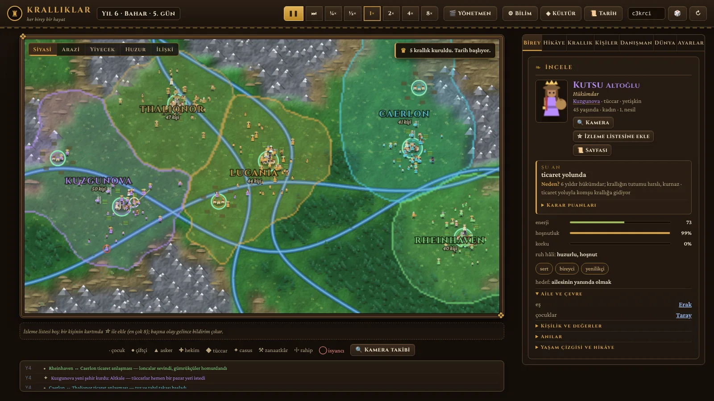

Featured project
Agent-Based Civilization Simulation
Every citizen is an independent agent with a Big Five personality, needs, memories and relationships. Kingdoms, wars, dynasties and rebellions emerge from their interactions, so every run tells a different history.
JavaScriptCanvasWeb Workers
- Web Worker architecture keeps 500+ concurrent agents running smoothly
- Built with vanilla JavaScript and HTML5 Canvas, no frameworks
- Agents age, marry, raise children, found dynasties and rebel